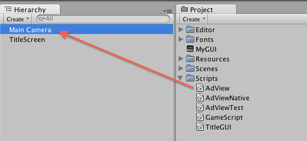

README for Unity support_ja.mdown.txt
AdLantis iOS SDK - README for Unity
AdLantis SDK iOS サンプルアプリケーション利用方法:
（Unity 3.4 対応、Unity 3.3 以前のバージョンでは未対応）
Unity で
「unity/adlantis_unity_sample」プロジェクトを開く。このプロジェクトでPublisher ID を設定する。 AdView クラス（AdView.cs スクリプト内）の Start() メソッドで、発行者 ID を以下のように設定してください。:
AdViewNative.SetPublisherId("MjExMA%3D%3D%0A");(注：テスト用には AdView.cs の代わりに AdViewTest.cs も使用可能ですが、プロジェクトとしては AdView.cs ファイルが必要です。)
- iOS にプロジェクトをエクスポートする。
- 対象プラットフォームを Universal armv6+armv7 に設定する。
- SDK のバージョンを最新版の iOS に設定する。
- Unity 3.4はシミュレータに対応していません。Unity 3.3 でシミュレータにエクスポートした場合、ネイティブプラグインはサポートされません。
- Xcode でプロジェクトを開く。
- Xcode 3.x では、対象を端末に設定する。
- Xcode 4.x では、スキームを Unity-iPhone 端末に設定する。（シミュレータに設定しないこと。）
AdLantis ファイルをプロジェクトに追加する。
フレームワークの追加:
MobileCoreServices.framework libz.dylibadlantis ファイル（「adlantis_sdk」ディレクトリ）:
adlantis ヘッダーファイル adlantis ライブラリ asihttprequest jsonkit「nativecode」を追加する（「unity/plugin」ディレクトリから）。
AdLantisSDKBinding.h AdLantisSDKBinding.mm AdLantisGeometryUtils.h AdLantisGeometryUtils.mソースを変更する。
AppController.mm での変更 AppController.mm ファイルでの変更は以下の通りです。
ファイル内インポートセクションでの変更 at import section of the of file:
#import "AdlantisAdManager.h" #import "AdlantisView.h" #import "AdLantisSDKBinding.h"OpenEAGLUnityCallback 機能では、view 作成後に以下のようなコードを追加してください（[window addSubview:view]; 行の後ろ)
// // AdLantis 追加開始 // AdlantisView *adView = AdView_Init(); [view addSubview:adView]; _AdView_SetPosition(AdViewTop); // この機能は AdView_Set 呼出し後のみ有効です。 // // AdLantis 追加終了 //
もしObjective-Cの例外で「cannot use '@try' with Objective-C exceptions disabled」というエラーメッセージが出た場合、「Enable Objective-C Exceptions」を「Yes」に設定するようにしてください。

- 端末でアプリケーションを起動する。
注：Unity プロジェクトを変更する場合、必ず追加にして、既存のプロジェクトと置き換えないでください。
AdLantis SDK サポートを iOS Unity 3.4 アプリケーションに追加する方法:
Unity でプロジェクトを開く。
- "title"シーンのオブジェクトをダブルクリックして開く。
adView MonoBehavior クラスをプロジェクトに追加する。
AdView.csスクリプトをシーンのオブジェクトの一つにドラッグしてください。シーンのメインカメラがよく使用されます。
スクリプトが加えられたことを確認するため、メインカメラのオブジェクトをクリックし、インスペクターパネルを調べてください。:

- このプロジェクトで発行者 ID を設定する。
AdView クラスの
Start()メソッドで、発行者 ID を以下のように設定してください。:AdViewNative.SetPublisherId("MjExMA%3D%3D%0A");（注：テスト用にはAdView.csの代わりにAdViewTest.csも使用可能ですが、プロジェクトとしてはAdView.csファイルが必要です。） AdViewNative.csをプロジェクトに追加する。
- iOS にプロジェクトをエクスポートする。
- 対象プラットフォームを Universal armv6+armv7 に設定する。
- SDK のバージョンを最新版の iOS に設定する。
- Unity 3.4はシミュレータに対応していません。Unity 3.3 でシミュレータにエクスポートした場合、ネイティブプラグインはサポートされません。
- Xcode でプロジェクトを開く。
- Xcode 3.x では、対象を端末に設定する。
- Xcode 4.x では、スキームを Unity-iPhone 端末に設定する。（シミュレータに設定しないこと。）
AdLantis ファイルをプロジェクトに追加する。
フレームワークの追加:
MobileCoreServices.framework libz.dylib CoreGraphics.framework (included by Unity 3.4)adlantis ファイル（「adlantis_sdk」ディレクトリ）:
adlantis header files adlantis library asihttprequest jsonkit「native_code」を追加する（「unity/plug_in」ディレクトリから）。AdLantisSDKBinding.h AdLantisSDKBinding.mm AdLantisGeometryUtils.h AdLantisGeometryUtils.mソースを変更する。
AppController.mm での変更 AppController.mm ファイルでの変更は以下の通りです。
ファイル内インポートセクションでの変更:
#import "AdlantisAdManager.h" #import "AdlantisView.h" #import "AdLantisSDKBinding.h"OpenEAGL_UnityCallback機能では、view 作成後に以下のようなコードを追加してください（[_window addSubview:view];行の後ろ）。// // AdLantis 追加開始 // AdlantisView *adView = AdView_Init(); [view addSubview:adView]; _AdView_SetPosition(AdViewTop); // この機能は AdView_Set 呼出し後のみ有効です。 // // AdLantis 追加終了 //
もしObjective-Cの例外で「cannot use '@try' with Objective-C exceptions disabled」というエラーメッセージが出た場合、「Enable Objective-C Exceptions」を「Yes」に設定するようにしてください。
- 端末でアプリケーションを起動する。
注：Unity プロジェクトを変更する場合、変更は必ず追加にして、既存のプロジェクトと置き換えないでください。